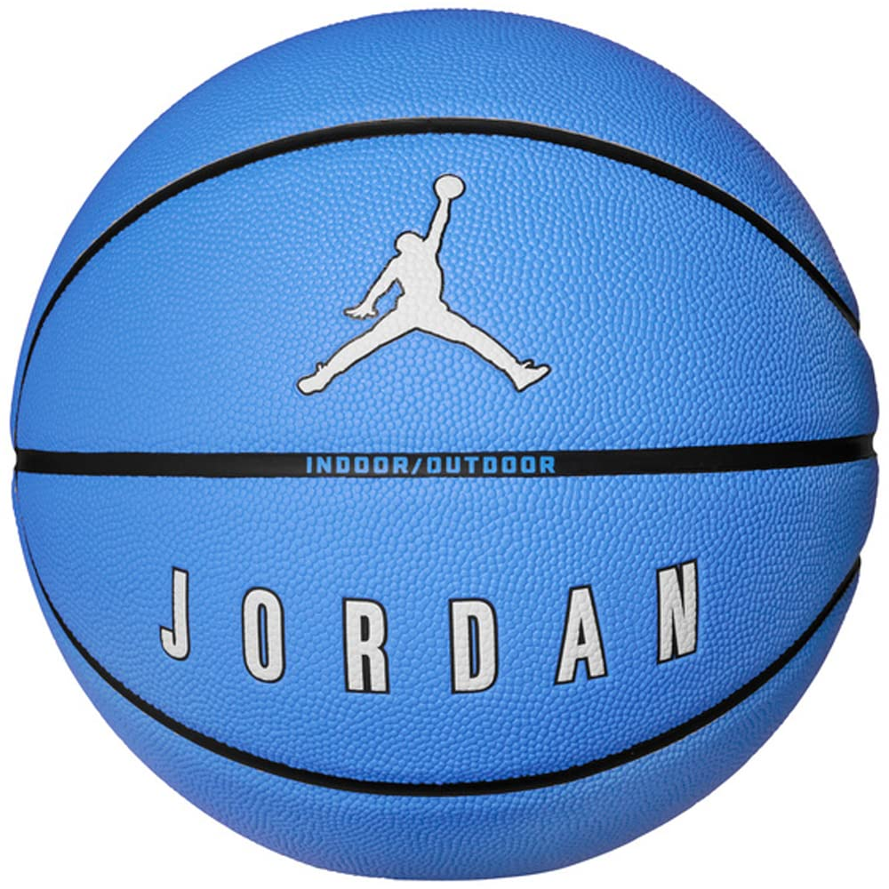
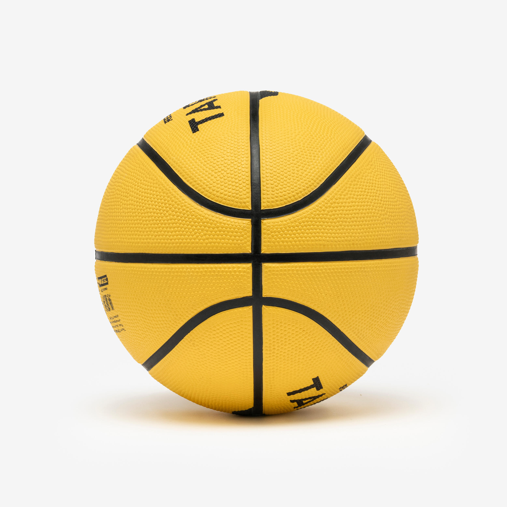
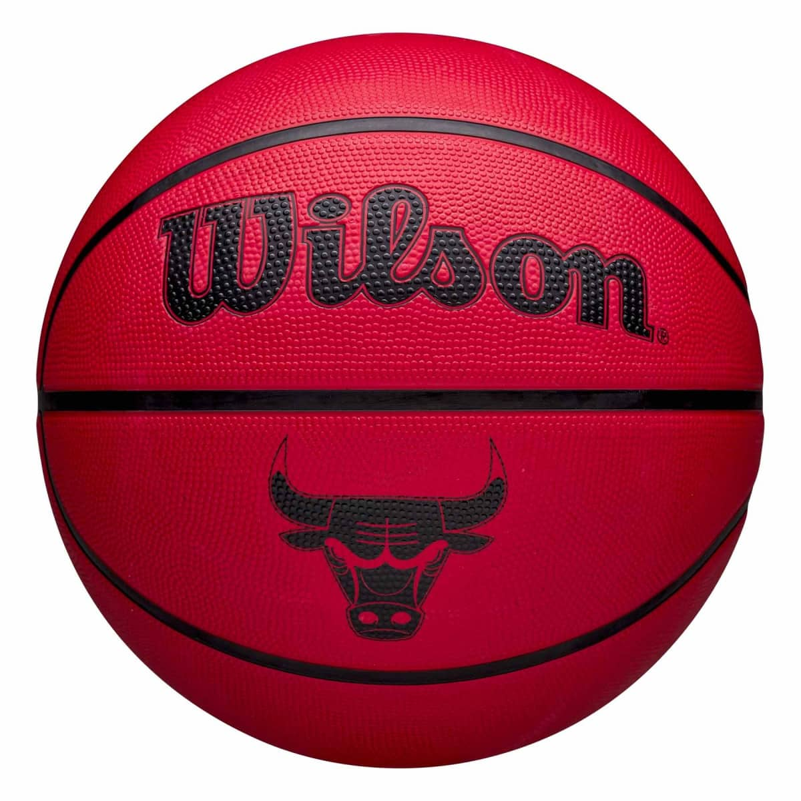
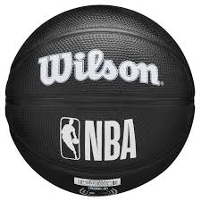

Accueil Les couleurs Images Les tableaux
Chaque couleur a son style… même sur un ballon de basket. Regarde bien, tu verras qu’elles racontent toutes un match différent.
Bleu - celui qui glisse sur le parquet, calme et précis, comme un tir à trois points parfait.

Jaune - éclatant comme les projecteurs d’un match de nuit, quand l’équipe chauffe et que tout brille.

Rouge - la couleur du rythme, du cœur qui bat quand le chrono tourne et que le ballon rebondit fort.

Noir sobre et puissant, celui qu’on sort pour les matchs sérieux, quand chaque dribble compte.
